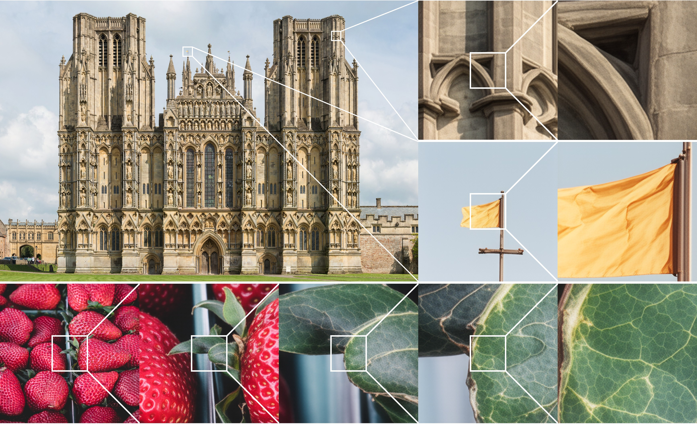
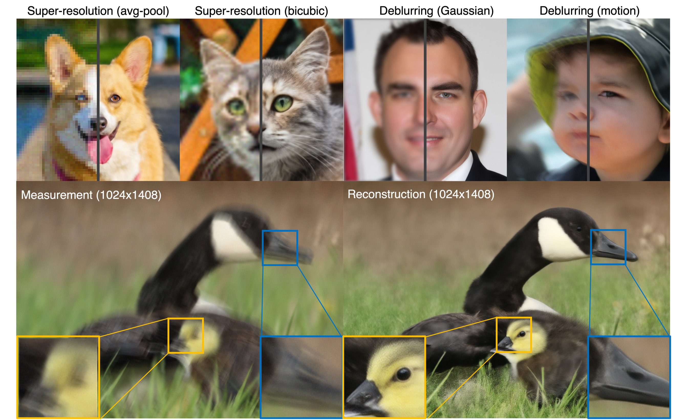
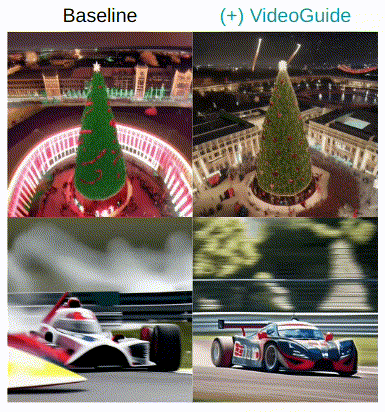
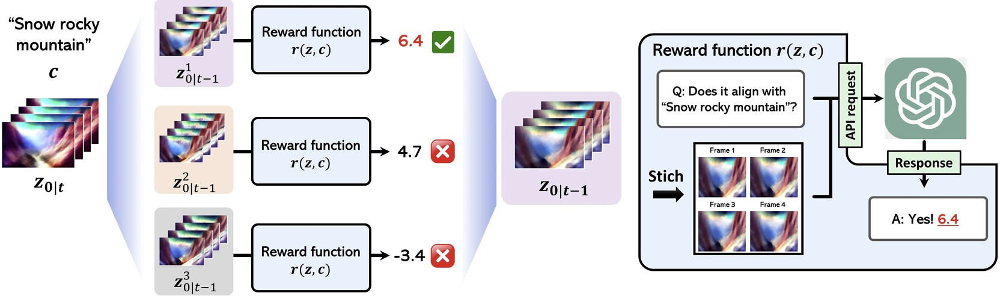

Bryan Sangwoo Kim
About Me
I am a second-year M.S. student at KAIST AI, advised by Prof. Jong Chul Ye. Before that, I received my B.S. degree in Computer Science and Biological Sciences (Double Major) at KAIST in Feb. 2024.
I am broadly interested in generative modeling across various modalities (images, videos) using diffusion models. My research interests also involve solving inverse problems with multi-modal generative models. Please refer to my CV for details.
News
- [Jun. 2025] Chain-of-Zoom has reached 500+ Github Stars!
- [Feb. 2025] VideoGuide is accepted to CVPR 2025.
- [Mar. 2024] I started M.S. at KAIST Graduate School of AI. (Advisor: Prof. Jong Chul Ye)
Publications
-
Chain-of-Zoom: Extreme Super-Resolution via Scale Autoregression and Preference Alignment
FlowDPS: Flow-driven posterior sampling for inverse problems
 CVPRVideoGuide: Improving Video Diffusion Models without Training Through a Teacher's Guide
Free2Guide: Gradient-Free Path Integral Control for Enhancing Text-to-Video Generation with Large Vision-Language Models
Powered by Jekyll and Minimal Light theme.